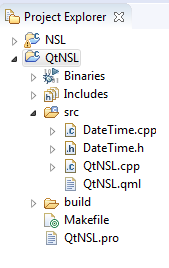

C++ NSL Project for Eclipse Installation Guide (DEPTRECATED, DONT FOLLOW THIS GUIDE)
Table of Contents
In order to successfully complete the installation you must first have the following:
In this guide Eclipse Neon 3.0 is used. Eclipse Neon 2.0 was used to export the project.
1. Open Eclipse and select a workspace for the project
2. Go to File > New > C++ Project and make an empty project
3. Go to File > Import and select Archive File
4. Select the CppApplication_NSL.zip file for the "From archive file" dialog box.
5. Ensure that you are importing the archive file into the root folder of the project. Click Finish afterwards
6. With the Project Folder selected on the Project Explorer panel, go to Project > Properties
7. Browse for C/C++ General > Paths and Symbols and under the Includes Tab click on GNU C++
8. Click on Import Settings
9. Click Browse to open the Open File Dialog Box
10. Navigate to your workspace and find NSL\CppApplication_NSL\includes.xml
11.Click Finish and OK afterwards. Your project hierarchy should look similar to this:
12. Ensure that the includes are properly loaded. Go back to the Paths and Symbols panel and click on an include path. If no error icon appears under the List Box of includes, the include path is recognized. If not you may need to properly direct the path to the correct workspace path.
13. Go to Project > Build Project. This may take some time. Afterwards you should see the project executable present in the Debug folder in your project folder.
If you have already downloaded and set up Qt with your compiler tools, skip to step 16.
1. Download Qt at https://www.qt.io/download-open-source/
2. Run the Qt installer and proceed with the installation until you arrive at the Component Selection page
3. Ensure that you install Qt 5.7 and Qt 5.8 with the components associated with your compiler. In this example, MinGW is used:
4. Ensure that you are installing the Tools components associated with your compiler. In this example, MinGW 5.3.0 is required:
5. Install Qt with the selected components. After the installation has finished you must add the necessary environment variables to your system. In this guide Windows 7 64-bit is used.
6. Click on the Start Menu and right click on Computer. Select Properties and click on the Advanced System Settings link.
7. Click on Environment Variables and under System Variables, locate PATH.
8. Keeping this window open, go to the installation directory of Qt. In the root folder of Qt, either open the 5.7 or 5.8 folder.
9. In this folder you should see a folder named after the compiler you are using. Enter this folder and open the bin folder inside. This example uses MinGW, so the directory for this folder is \...\Qt\5.8\mingw53_32/bin.
10. Copy the absolute path of the bin folder from Windows Explorer's directory URL.
11. In the Environment Variables window, with PATH selected, click edit and add this URL after a semicolon.
12. Go to the Tools folder in the Qt directory and open the folder named after your compiler and open the bin folder inside. In this example, the directory is \...\Qt\Tools'mingw530_32/bin
13. Copy the absolute path of this folder and add the URL to PATH's value after a semicolon.
14. The end of your PATH variable should look similar to this:
...\;D:\QtMinGw\5.8\mingw53_32\bin;D:\QtMinGw\Tools\mingw530_32\bin
15. Click OK and exit the window.
16. Open Eclipse and go to your Workbench.
17. Click on Help > Install New Software
18. Set the Work With: selection to "All Available Websites" and in the search box type "Qt"
19. Select the Qt Support options for CDT and Programming Languages
20. Install the tools and restart Eclipse afterwards
21. Go to your workbench and go to File > New > C/C++ Project. Select Qt C++/QML Application
22. Click next and provide the path to qmake.exe if necessary. This will be in \Qt\{VERSION}\mingw53_32\bin\qmake.exe
23. Go to your workbench. Your Qt Project hierarchy should look similar to the following in the Project Explorer. There should, however, be no Makefile. You should only see a QML, PRO and starting CPP file with your project name on each.

25. Go to Project > Build Project and ensure that the project compile successfully
26. Right click on your Qt Project folder and click Import
27. Select Archive File and select the QtNSL_CppApplication.zip archive
28. You should have a folder named qtnsl in your Qt Project folder
29. Copy the contents of qtnsl/qtnsl.pro into your <Project Name>.pro file. Delete qtnsl/qtnsl.pro
Be sure to only modify paths set in the INCLUDE parameter, do not modify other paths.
31. Verify the validity of the directories you changed in step 30.
32. You may delete your <Project Name>.cpp main file and your original QML and QRC files. Do not delete your .PRO file.
33. Go to Project > Build Project and verify that it is built. This may take a while.
You should now have compiled your project.
In this example, Ubuntu 16.4 was used
1. Use the repository to install Qt 5 by the following commands:
sudo apt-get install qt5-default
sudo apt-get install qtdeclarative5-dev
2. Open Eclipse and go to your Workbench.
3. Click on Help > Install New Software
4. Set the Work With: selection to "All Available Websites" and in the search box type "Qt"
5. Select the Qt Support options for CDT and Programming Languages
6. Install the tools and restart Eclipse afterwards
7. Go to your workbench and go to File > New > C/C++ Project. Select Qt C++/QML Application
8. Go to your workbench. Your Qt Project hierarchy should look similar to the following in the Project Explorer. There should, however, be no Makefile. You should only see a QML, PRO and starting CPP file with your project name on each.
9. Go to Project > Build Project and ensure that the project compile successfully
10. Make sure that the correct version of Qt is being used to compile the blank project. This is optional if you haven't had a previous version.
11. Right click on your Qt Project folder and click Import
12. Select Archive File and select the QtNSL_CppApplication.zip archive
13. You should have a folder named qtnsl in your Qt Project folder
14. Copy the contents of qtnsl/qtnsl.pro into your <Project Name>.pro file. Delete qtnsl/qtnsl.pro
15. The INCLUDEPATH values are in Windows format by default. Paste over the values located in qtnsl_directories_linux.txt packaged with the installation with the old INCLUDEPATH values located in the qtnsl.pro file.
H:\NSL\QtNSL\qtnsl\NSLfiles\MAIN\incl \
...must bechanged to
/home/usr/nsl/qtnsl/NSLfiles/MAIN/incl/
Remember that Linux systems use a different slash
Be sure to only modify paths set in the INCLUDE parameter, do not modify other paths.
16. Verify the validity of the directories you changed in step 15.
17. You may delete your <Project Name>.cpp main file and your original QML and QRC files. Do not delete your .PRO file.
18. Go to Project > Build Project and verify that it is built. This may take a while.
You should now have compiled your project.